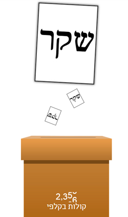

משחקים

המרוץ לראשות
משחק כפתור אחד שאני וחבר עשינו לקראת הבחירות. במשחק ניתן לבחור שם מפלגה (לא חייבת להיות אמיתית) ולהתחיל להצביע עבורה. ההצבעות מכל השחקנים מצטברות בזמן אמת ונוצרת תחרות עבור המפלגה שתזכה בהכי הרבה הצבעות.

תופסת דורות
משחק שעבדתי עליו כמעצב גרפי במסגרת תחרות Global Game Jam. תחרות יצירת משחקים בינלאומית שבה צריך ליצור משחק ביומיים. המשחק עובד ע"י שימוש במצלמת אינטרנט. שחקן אחד עומד מול המצלמה ומנסה לפגוע במטרות בזמן ששחקן אחר רואה וידאו שלו ובוחר איפה יופיעו המטרות.